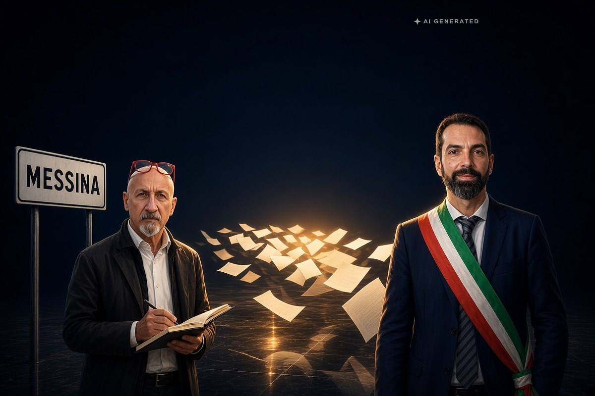

Sicilia · 24 ottobre 2026
Le motivazioni del Tar: sulle liste la legge siciliana non mette un tetto

Depositate le ragioni per cui i due ricorsi contro le elezioni di Messina sono stati respinti. Sulle firme i giudici scrivono che la norma regionale parla di liste al plurale e non fissa alcun limite. Sulle dimissioni di Basile vale la legge siciliana, non quella dello Stato.
di Franco Zanghì
Il Tar di Catania ha depositato il 23 ottobre le motivazioni delle due decisioni con cui, tre giorni prima, aveva respinto i ricorsi contro le elezioni comunali di Messina. Sono le sentenze 2739 e 2740 del 2026, della quinta sezione, firmate dal collegio presieduto da Agnese Anna Barone, che ne è anche estensora, con il consigliere Giovanni Giuseppe Antonio Dato e il primo referendario Salvatore Ermete Massimo Accolla. Il verdetto si conosceva dal 21 ottobre: Federico Basile resta sindaco. Quello che mancava era il perché.
Dentro quelle motivazioni c'è una frase che vale ben oltre Messina. La legge elettorale siciliana, scrivono i giudici, parla di liste al plurale e un tetto al numero non lo mette. Non c'è nessuna regola aggirata: c'è una regola che non dice quanto.
Le quattordici liste senza firme
A sostegno di Basile si sono presentate 15 liste, e 14 hanno usato l'esenzione dalla raccolta delle sottoscrizioni, affiancando al proprio nome il simbolo di Sud chiama Nord. La legge regionale esonera infatti dalla raccolta delle firme i partiti che all'Assemblea regionale siciliana hanno un gruppo.
Il Tar dice due cose. La prima è che la norma usa il plurale e non pone alcun limite numerico né un vincolo di corrispondenza univoca fra partito e lista. La seconda è che ogni lista che incorpora o affianca il simbolo di un partito radicato all'Assemblea regionale ne costituisce un'articolazione organizzativa, e perciò l'esonero si estende all'intera proposta elettorale di quella forza politica. I giudici aggiungono che obbligare un partito a raccogliere le firme per le sole liste civiche collegate ne penalizzerebbe ingiustamente la strategia.
Cadono anche i rilievi minori. La presentazione delle liste da parte di un solo delegato è legittima, e le rettifiche grafiche ai simboli non alteravano l'identità delle liste né i candidati, quindi non richiedevano una nuova firma di accettazione.
Le dimissioni, e dove finisce la legge dello Stato
Il secondo ricorso riguardava Basile in persona. Le sue dimissioni erano diventate irrevocabili il 27 febbraio 2026, tre giorni oltre il 24 febbraio fissato dalla legge statale 182 del 1991 per rientrare nella tornata di primavera: per i ricorrenti erano arrivate troppo tardi perché si potesse votare a maggio.
Il Tar ha smontato anche questa. La Regione Siciliana ha potestà legislativa primaria ed esclusiva sul regime degli enti locali e sul procedimento elettorale, e vale quindi l'articolo 11 della legge regionale 35 del 1997, che impone di tornare alle urne al primo turno utile. Il termine statale, scrivono i giudici, non è un principio fondamentale inderogabile e nell'isola non si applica direttamente. Il vuoto normativo lamentato dai ricorsi non esiste, perché le dimissioni del sindaco la legge siciliana le disciplina già.
Le spese di giudizio sono state compensate fra tutte le parti, proprio per la novità delle questioni. La prefettura di Messina, chiamata in causa insieme al Comune e alla Regione, è stata estromessa per difetto di legittimazione passiva. E il risultato resta quello uscito dalle urne del 24 e 25 maggio, con Basile eletto al primo turno con il 58,42%.
Una norma che i giudici stessi dicono ambigua
All'inizio di ottobre un'altra sezione dello stesso tribunale aveva dato la stessa identica lettura su Barcellona Pozzo di Gotto. Due città della stessa provincia, due collegi diversi, una sola conclusione. In quella decisione, però, c'è un passaggio che non ha fatto notizia: i giudici avevano ammesso che la disposizione si presta a letture diverse e che dal testo non esce una soluzione univoca.
Se la norma si può leggere in più modi, perché la lettura giusta sarebbe questa? La risposta onesta è che non si sa. A decidere è un collegio di tre giudici, e nella giustizia amministrativa italiana l'opinione di chi non è d'accordo non si pubblica: esce una sentenza sola, e come si è formata resta dentro quella stanza.
Una sentenza che ammette da sé di stare interpretando un testo a più letture è, per chi ha perso, l'appiglio migliore che ci sia. E il secondo grado esiste: in Sicilia non si va al Consiglio di Stato, si va al Consiglio di giustizia amministrativa per la Regione siciliana. Al 24 ottobre nessuno ha annunciato di volerci andare, ma i termini per impugnare sono ancora aperti.
Il bersaglio, qui, non sono i partiti che hanno usato la regola fino in fondo: quello è il mestiere di chi si candida, e nessuno si aspetta il contrario. Il punto è a Palermo. Quella legge ha 34 anni, un limite non lo scrive, e per sapere che cosa significa è servito arrivare davanti a un giudice amministrativo due volte, in due comuni, con quattro ricorsi e un'intera elezione tenuta in sospeso per cinque mesi. Quante altre città dovranno finire davanti a un tribunale, prima che all'Assemblea regionale qualcuno scriva la riga che manca?
Fonti
- StrettoWeb, Danilo Loria, «Elezioni comunali Messina: il Tar spiega perché ha respinto i ricorsi, dalle liste alle dimissioni di Basile», 23 ottobre 2026
- Tempostretto, Marco Ipsale, «Elezioni Messina, ecco perché il Tar ha rigettato i ricorsi», 23 ottobre 2026
- Lettera Emme, «Perché Federico Basile è rimasto sindaco, secondo il Tar», 24 ottobre 2026
- MessinaToday, «Liste senza firme e simboli modificati, il Tar spiega perché le elezioni di Messina sono regolari», 23 ottobre 2026
- MessinaOra, «Messina, il Tar respinge entrambi i ricorsi: Basile resta sindaco», 21 ottobre 2026
- Voce di Popolo, «Firme di Sud chiama Nord, il Tar respinge il ricorso sulle elezioni di Messina. Basile resta sindaco», 21 ottobre 2026
- MessinaOra, «Messina, secondo round al Tar: in discussione i ricorsi contro l'elezione di Basile», 20 ottobre 2026
Il testo integrale delle sentenze 2739 e 2740 del 2026 non è stato letto: tutti i passaggi riportati provengono dalle testate che hanno dato conto delle motivazioni. Al 24 ottobre 2026 nessuna fonte riporta un annuncio di appello al Consiglio di giustizia amministrativa: i termini per impugnare sono aperti e la vicenda non è definitiva.